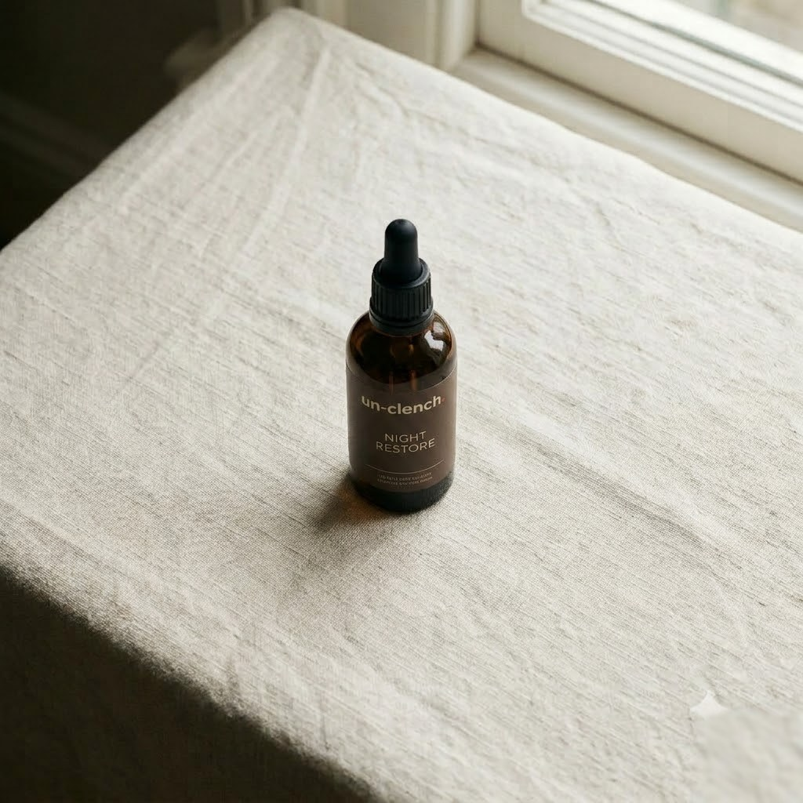

A clencher's evenings need a switch-off signal. Night Restore is a nightly dose of magnesium glycinate with L-theanine, taken as drops before bed — a deliberate, repeatable end to the day for muscles and mind that have been holding on since morning.
Un-clench is the only company that has dedicated its entire existence to jaw clenching and tooth grinding. Every hour of research, every product and every clinician we work with exists to do one thing: relieve the clench — using the latest clinical science, built to the standard of the leading experts we work with.
The form of magnesium chosen for its gentleness on the stomach. Magnesium contributes to normal muscle function, normal functioning of the nervous system, and the reduction of tiredness and fatigue — which is precisely the territory a clencher cares about.
An amino acid found naturally in green tea, included for the evening ritual — it's the companion ingredient in wind-down formulas the world over.
Drops absorb without capsules to swallow and make the dose a deliberate act — a small ceremony that marks the end of the day, which is half the point.
Food supplement. Take one dose (as directed on the label) in the evening. Do not exceed the stated dose. Food supplements should not be used as a substitute for a varied, balanced diet and a healthy lifestyle. Keep out of reach of children. Consult your doctor if pregnant, breastfeeding or taking medication. Full ingredient and allergen listing on the bottle.
Take one dropper dose in the half-hour before bed — directly, or in a small glass of water.
Make it the anchor of a wind-down: dose, balm, plate in. Rituals work because they repeat.
Use nightly for at least three weeks — consistency matters far more than any single dose.
Pair with reduced late caffeine and screens; the inputs you remove matter as much as the ones you add.